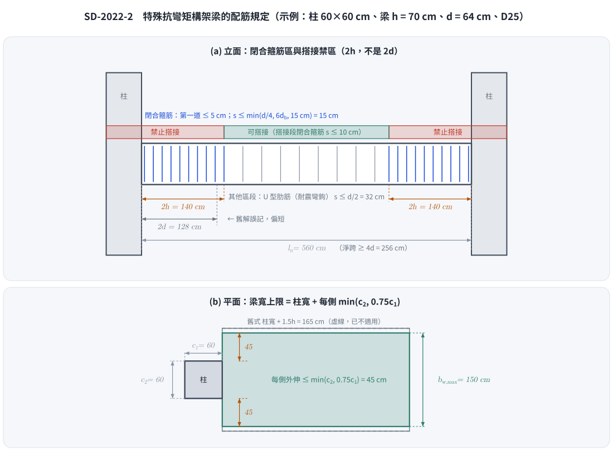

📄 題目正本：考卷原文・附圖・判讀清單（已確認）
SD-2022-2 題目正本
本檔只記錄考卷上寫了什麼、圖上畫了什麼，不含任何解法。解析見同資料夾
SD-2022-2.md。
判讀清單經使用者確認前，狀態為「待確認」；確認後本檔原則上不再修改（改動須回考卷原圖並記 log）。
| 項目 | 內容 |
|---|---|
| 考卷 | raw/exams/SD-2022_結構動力分析與耐震設計.pdf，第 1 頁（正面，頁次 2－1）下方，第二題 |
| 考年 | 2022（民國111年）專技高考結構工程技師「結構動力分析與耐震設計」（代號 00330） |
| 配分 | 25 分（㈠5、㈡10、㈢10） |
| 附圖 | 無（純文字論述題） |
| 判讀狀態 | 已確認（2026-11-16，使用者授權依 Claude 建議。原轉錄：2026-11-16 轉錄；PyMuPDF 110 dpi 整頁目視（子題編號 ㈠–㈢ 在文字層為私用字元，以影像判讀），PDF 文字層核對原文；盲讀於開啟解析前完成） |
1. 考卷原文（逐字）
二、鋼筋混凝土在耐震設計方面有許多特別規定，有關於撓曲構材配筋的規定，請回答下列問題：
㈠計算梁寬最大值的規定為何？此規定的理由為何？（5 分）
㈡縱向鋼筋最大鋼筋比的規定以及搭接的規定為何？理由為何？（10 分）
㈢設置閉合箍筋的目的為何？為達到此目的，有關設置閉合箍筋的位置和間距的規定為何？（10 分）
2. 考卷給的公式、附表與參數
- 考卷沒有給任何公式、數值或附表（純論述題）。
- 考卷沒有給：規範名稱與版本；構材尺寸、材料強度；結構系統類別（特殊／中度韌性抗彎矩構架）。
- 卷首注意事項：㈠可以使用電子計算器。㈡不必抄題，作答時請將試題題號及答案依照順序寫在試卷上，於本試題上作答者，不予計分。㈢本科目除專門名詞或數理公式外，應使用本國文字作答。考試時間：2 小時。
3. 附圖
本題無附圖（同頁的附圖屬第一題：剛構架與節點質量，與本題無關）。
4. 判讀清單
| # | 項目 | 判讀 | 圖上／題文依據 | 把握 |
|---|---|---|---|---|
| 1 | 規範依據與構架類別 | 考卷未指定；依現行建築物混凝土結構設計規範（2023 年版）耐震特別規定中「特殊抗彎矩構架之撓曲構材（梁）」作答（根目錄 CLAUDE.md「規範版本」）。理由：題文「耐震設計方面有許多特別規定」「撓曲構材」對應規範耐震章的特殊抗彎矩構架梁條文 | 題文未提規範與構架類別 | 不確定（解讀）——定案採特殊抗彎矩構架；中度韌性構架規定不同，作答可附註 |
| 2 | ㈠「計算梁寬最大值」 | 問的是梁寬上限（梁寬相對於支承柱寬的限制）及其理由；「計算」為考卷用詞，指該上限的計算規定，非數值計算。梁寬下限（最小寬度、寬深比）不是 ㈠ 的主問，作答可附帶 | 題文「梁寬最大值的規定」 | 確定（解讀） |
| 3 | ㈡ 兩項 | 縱向鋼筋最大鋼筋比的規定、搭接的規定（位置限制與搭接範圍的橫向鋼筋），各說明理由 | 題文 | 確定 |
| 4 | ㈢ 兩項 | 閉合箍筋（耐震箍筋）的目的；設置位置（區域）與間距的規定 | 題文 | 確定 |
| 5 | 「撓曲構材」範圍 | 限於梁（撓曲構材），不含柱、梁柱接頭的規定 | 題文「有關於撓曲構材配筋的規定」 | 確定（解讀） |
| 6 | 考卷沒有給 | 任何數值；不要求計算 | 題文 | 確定 |
轉錄：2026-11-16（SD-U3-1 題目正本推廣・組 U3-1-G2）
確認：2026-11-16 使用者授權依 Claude 建議確認（SD-U3-1 題目正本推廣・組 U3-1-G2，關卡一）
考題編號：SD-2022-2
主分類： SD-U3-1 結構耐震設計（含 RC 結構與鋼結構）
副分類： SD-U2-2 建築耐震設計規範
分析方法： 概念題（規範論述）
標籤： RC耐震設計 撓曲構材 梁寬規定 縱向鋼筋比 搭接規定 閉合箍筋 圍束 塑鉸區
1. 題目（考卷原文見題目正本）
考卷原文、公式／附表、附圖與判讀清單（已確認）見
SD-2022-2-problem.md。本節只列解題時最容易讀錯的地方與本解使用的記號；題意以題目正本為準。
本題為純文字題，考卷無附圖。
常見誤讀
| 項目 | 正確判讀 | 常見誤讀 |
|---|---|---|
| 規範與構架類別 | 依現行建築物混凝土結構設計規範（2023 年版）耐震特別規定的特殊抗彎矩構架梁作答（判讀 #1） | 引用舊版數值：梁寬「柱寬＋1.5 倍梁深」、箍筋間距 8 倍主筋徑／24 倍箍筋徑／30 cm（本庫舊解） |
| 閉合箍筋區、搭接禁區 | 量 2 倍梁深 $2h$（18.3.3.3、18.3.4.1） | 寫成 $2d$（本庫舊解） |
| ㈠ 問的是上限 | 梁寬最大值（相對支承柱寬）及理由；最小寬度只能附帶（判讀 #2） | 只答最小寬度 $0.3h$、250 mm |
| ㈡ 兩項 | 最大鋼筋比與搭接規定（位置限制、搭接區橫向鋼筋），各附理由（判讀 #3） | 只答鋼筋比，漏答搭接或理由 |
| ㈢ 兩項 | 閉合箍筋的目的，以及設置位置與間距（判讀 #4） | 只答間距、漏答設置區域 |
| 範圍 | 只答撓曲構材（梁），不含柱、梁柱接頭（判讀 #5） | 混入柱圍束箍筋規定 |
本解記號： $b_w$ 梁寬、$h$ 梁深、$d$ 有效深度、$c_1$／$c_2$ 支承柱沿梁跨／垂直梁跨方向尺寸、$\rho$ 縱向拉力鋼筋比、$d_b$ 最小主要撓曲鋼筋直徑、$s$ 箍筋間距。
2. 考題核心精神與出題者意圖（Core Concepts & Examiner's Intent）
核心觀念： 特殊抗彎矩構架（Special Moment Frame）的梁，在強烈地震下必須在預設塑鉸位置（梁端）發展充分的非彈性旋轉能力，同時避免脆性破壞模式。三個子題分別從三個角度切入：
- 梁寬上限 → 梁的力量要能有效傳入梁柱接頭
- 鋼筋比與搭接 → 確保延性（鋼筋降伏先於混凝土壓碎）、反覆載重下鍵結不先失效
- 閉合箍筋 → 塑鉸區的圍束、防止縱筋挫屈、抵抗剪力
出題者意圖： 測驗考生對混凝土規範耐震特別規定（現行建築物混凝土結構設計規範 112 年版第 18.3 節「特殊抗彎矩構架之梁」）的熟悉程度，尤其是規定背後的力學理由（Why），而不只是死背條文（What）。
3. 解題戰略地圖與陷阱分析（Strategic Roadmap & Trap Analysis）
作答策略： 每個子題先寫規定（條文），再寫理由（力學）。
關鍵陷阱：
- 梁寬上限是「柱寬＋每側外伸量」：現行規定每側外伸不超過 $c_2$ 與 $0.75c_1$ 之較小值（$c_1$ 為柱沿梁跨方向尺寸、$c_2$ 為垂直方向尺寸）。舊版「每側 $3h/4$（梁深）」的寫法已不適用。
- 鋼筋比是「上限」不是「下限」：$\rho\le0.025$（另有一式隨 $f'_c$、$f_y$ 變化，見 §5.2），答最小鋼筋比則答非所問。
- 搭接位置是重點：搭接禁區量的是2 倍梁深 $2h$，不是 $2d$；另含「接頭內」與「可能撓曲降伏斷面兩側」。
- 閉合箍筋要區分需要閉合箍筋的區段與其他區段：前者間距 $\min(d/4,\ 6d_b,\ 15\text{ cm})$，後者用兩端耐震彎鉤 U 型肋筋、間距 $\le d/2$。舊版 $8d_b$、$24d_h$、30 cm 已不適用。
3.5 變數層次分析（Variable Hierarchy Analysis）
複習提示：第一次解題後，在每個卡住的知識點旁標記
⚠；第二次複習時只看有⚠的項目。
最終目標
回答三個子題的規定條文與力學理由
本題關鍵公式（依計算順序）
$$\text{梁寬上限（18.3.2.1(c)）：} b_w \leq c_2 + 2\min(c_2,\ 0.75c_1)$$
$$\text{最大縱筋比（18.3.3.1）：} \rho \leq 0.025\ \text{（且不大於該條另一式）}$$
$$\text{閉合箍筋間距上限（18.3.4.4，}f_y=4200\text{ kgf/cm}^2\text{）：} s \leq \min\!\left(\frac{d}{4},\ 6d_b,\ 15\,\text{cm}\right)$$
$$\text{不需閉合箍筋處（18.3.4.6）：} s \leq \frac{d}{2}$$
符號：$c_1$ = 柱沿梁跨方向尺寸、$c_2$ = 柱垂直梁跨方向尺寸、$h$ = 梁深、$d$ = 梁有效深度、$d_b$ = 最小主要撓曲鋼筋直徑
L1：題目直接給定
| 符號 | 數值 | 說明 |
|---|---|---|
| — | — | 本題為純概念題，無數值給定；所有規定均來自現行規範 |
L2：需知識點推導
子題(一)：梁寬（18.3.2.1）
| 項目 | 規範規定 | 卡關? |
|---|---|---|
| 梁寬最大值 | 超出柱寬部分，任一邊 $\le\min(c_2,\ 0.75c_1)$，即 $b_w\le c_2+2\min(c_2,0.75c_1)$ | |
| 梁寬最小值 | $b_w \geq 0.3h$ 且 $\geq 25$ cm | |
| 淨跨 | $\ell_n \geq 4d$ |
子題(二)：縱向鋼筋（18.3.3）
| 項目 | 規範規定 | 卡關? |
|---|---|---|
| 連續鋼筋 | 上下兩面各至少兩支連續鋼筋 | |
| 最大鋼筋比 | 拉力鋼筋比 $\rho \leq 0.025$（且不大於 18.3.3.1 另一式） | |
| 彎矩強度 | 接頭面 $M_n^+\ge\frac12M_n^-$；任何斷面正、負彎矩強度 $\ge$ 任一接頭面最大彎矩強度之 1/4 | |
| 搭接禁止位置 | (a) 接頭內；(b) 距接頭面 $2h$ 範圍內；(c) 距可能撓曲降伏臨界斷面 $2h$ 範圍內 | |
| 搭接區橫向鋼筋 | 閉合箍筋或螺箍筋圍封，間距 $\le\min(d/4,\ 10\text{ cm})$ |
子題(三)：閉合箍筋位置與間距（18.3.4）
| 項目 | 規範規定 | 卡關? |
|---|---|---|
| 設置區段 | 梁兩端由柱面向跨中 $2h$；可能撓曲降伏斷面兩側各 $2h$ | |
| 第一道箍筋 | 距支承柱面 $\leq 5$ cm | |
| 間距 | $s \leq \min(d/4,\ 6d_b,\ 15\text{ cm})$（$f_y=4200$；5000、5600 kgf/cm² 鋼筋分別為 $5.5d_b$、$5d_b$） | |
| 縱筋側向支撐 | 最靠近拉、壓側的主筋須有側向支撐；具橫向支撐之撓曲鋼筋間距 $\le 35$ cm | |
| 其他區段 | 兩端耐震彎鉤 U 型肋筋沿全長配置，$s \le d/2$ | |
| 彎鉤 | 耐震彎鉤：彎內角至少 135°，直線延伸段伸入圍束區內部（25.3.4） |
L3：深層知識（不懂就卡住）
| 知識點 | 說明 | 卡關? |
|---|---|---|
| 超筋梁 vs 欠筋梁 | 鋼筋比過高時混凝土先壓碎，脆性；鋼筋先降伏才有延性。耐震設計必須保證延性 | |
| 塑鉸（Plastic Hinge） | 梁端在地震下形成塑鉸，該區必須有足夠的曲率延性才能消散地震能量；塑鉸長度約與梁深同級，故以 $2h$ 界定 | |
| 圍束效應（Confinement） | 箍筋圍束核心混凝土，提高其壓應變能力，使斷面能達到更大旋轉 | |
| 搭接在反覆載重下的弱點 | 反覆載重使搭接區的鍵結力退化，若位於塑鉸區，搭接易提早失效 | |
| 梁寬與接頭 | 梁超出柱寬太多時，外側縱筋的力無法有效經由接頭傳遞（規範解說：此限制界定能有效傳力至接頭的最大梁寬） |
4. 步驟化詳細計算過程（Step-by-Step Detailed Calculation）
依據：建築物混凝土結構設計規範（112 年版）第 18.3 節「特殊抗彎矩構架之梁」（題目未指定規範，依現行規範；判讀 #1）。
子題(一)：梁寬最大值的規定與理由（5 分）
規定（18.3.2.1(c)）
梁寬超過支承柱寬度之部分，任一邊之長度不應超過 $c_2$ 與 $0.75c_1$ 之較小值：
$$\boxed{b_w \leq c_2 + 2\min(c_2,\ 0.75c_1)}$$
其中 $c_1$ 為柱沿梁跨方向的尺寸、$c_2$ 為柱垂直梁跨方向的尺寸。
梁的其他尺寸限制（18.3.2.1(a)(b)）：
- $b_w \geq 0.3h$ 且 $b_w \geq 25$ cm（最小值）
- 淨跨 $\ell_n \geq 4d$（避免深梁行為、剪力主導）
理由
- 確保梁柱接頭的有效力傳遞：梁寬遠大於柱寬時，位於柱寬以外的梁縱筋無法直接穿過或錨定於接頭核心，其拉壓力必須經由梁版與接頭側面間接傳遞，效率低且不可靠。規範解說說明此限制界定「能有效傳力至梁柱接頭之最大梁寬」（依 ACI 352R 的實務與研究）。
- 確保接頭與塑鉸區的圍束有效：柱寬以外的梁混凝土不受柱縱筋與接頭箍筋圍束，寬度過大時接頭兩側在反覆載重下易剝落，降低接頭剪力強度與韌性。
子題(二)：縱向鋼筋最大鋼筋比與搭接規定（10 分）
(A) 最大鋼筋比規定（18.3.3.1、18.3.3.2）
$$\boxed{\rho = \frac{A_s}{b_w d} \leq 0.025\quad\text{（且不大於 18.3.3.1 另一式，見第 5.2 小節）}}$$
- 梁上下兩面各至少兩支連續鋼筋，且任何斷面上下兩面鋼筋量至少符合最小鋼筋量（9.6.1.2）。
- 接頭面正彎矩強度至少為該接頭面負彎矩強度之半：$M^+_{n} \geq \frac{1}{2} M^-_{n}$。
- 沿構材長度任何斷面之正、負彎矩強度皆至少為任一接頭面最大彎矩強度之 1/4。
(A) 理由
- 保證延性破壞模式：鋼筋比過高時，混凝土可能先於鋼筋達到壓應變極限，曲率延性不足。規範解說說明 0.025 的上限可確保足夠變形能力、避免鋼筋擁擠，並間接限制一般尺寸梁的剪應力；另一式則反映 $f_y$、$f'_c$ 對曲率韌性的影響。
- 正彎矩與全長強度下限：地震正負彎矩交替，梁端兩個方向都要能形成穩定塑鉸；全長保有 1/4 強度則避免彎矩分布與預期不同時（例如反曲點移動）中段先破壞。
(B) 搭接規定（18.3.3.3）
- 搭接範圍須配置閉合箍筋或螺箍筋圍封，其間距：
$$s \leq \min\!\left(\frac{d}{4},\ 10\,\text{cm}\right)$$
- 搭接不得用於：
$$\boxed{\text{(a) 接頭內；(b) 距接頭面 } 2h \text{ 範圍內；(c) 距可能撓曲降伏臨界斷面 } 2h \text{ 範圍內}}$$
- 搭接長度依第 25.5 節（乙級搭接 $\ell_{st}$ 取 $1.3\psi_g\ell_d$ 與 30 cm 之大值）。
(B) 理由
- 避免搭接位於塑鉸區：梁端 $2h$ 範圍是塑鉸潛在區域，反覆的大拉壓應力與保護層剝落使搭接鍵結快速退化，鋼筋會提早滑脫、喪失承載力。
- 搭接區密箍：鍵結力傳遞引起劈裂裂縫，較密的閉合箍筋限制劈裂擴展、維持搭接強度。
子題(三)：閉合箍筋的目的、位置與間距（10 分）
(A) 設置閉合箍筋的目的
- 提供圍束（Confinement）：閉合箍筋圍束核心混凝土，限制其橫向膨脹，提高壓應變能力，使塑鉸區在大變形下仍能維持承載能力。
- 防止縱向鋼筋挫屈（Buckling）：反覆載重使受拉筋轉為受壓，保護層剝落後縱筋失去側撐；閉合箍筋（含 18.3.4.2 的側向支撐規定）提供縱筋側向束制。
- 提供剪力抵抗：塑鉸區混凝土剪力貢獻退化，閉合箍筋須依 18.3.5（以可能彎矩強度 $M_{pr}$ 求設計剪力）抵抗剪力，避免剪力破壞先於撓曲降伏（18.3.4.5）。
閉合箍筋採耐震彎鉤：彎內角至少 135°，直線延伸段伸入所圍束區域內部（25.3.4），保護層剝落後仍維持閉合；亦可用兩端耐震彎鉤的 U 型肋筋加一根繫筋組成閉合肋筋（18.3.4.3）。
(B) 位置規定（18.3.4.1）
$$\boxed{\text{(a) 梁兩端由支承柱面向跨中 } 2h \text{ 範圍內；(b) 可能撓曲降伏斷面兩側各 } 2h \text{ 範圍內}}$$
(C) 間距規定（18.3.4.4、18.3.4.6）
- 第一道閉合箍筋距支承柱面 $\leq 5$ cm
- 閉合箍筋間距：
$$\boxed{s \leq \min\!\left(\frac{d}{4},\ 6d_b,\ 15\,\text{cm}\right)}\quad(f_y=4200\text{ kgf/cm}^2)$$
| 條件 | 說明 |
|---|---|
| $d/4$ | 有效深度的 1/4，使斜裂縫至少穿過數道箍筋 |
| $6d_b$ | 最小主要撓曲鋼筋直徑的 6 倍（$f_y=5000$、5600 kgf/cm² 鋼筋為 $5.5d_b$、$5d_b$），控制縱筋挫屈 |
| 15 cm | 絕對上限，確保圍束 |
- 需要閉合箍筋範圍內，具橫向支撐之撓曲鋼筋間距 $\le 35$ cm（18.3.4.2）。
- 不需閉合箍筋處：兩端具耐震彎鉤之 U 型肋筋沿全長配置，$s \leq d/2$（18.3.4.6）。

圖 1 以 §5.1 示例（柱 60×60 cm、梁 $h=70$ cm、$d=64$ cm、D25）畫出 18.3 節的配筋規定：閉合箍筋區與搭接禁區都量 $2h=140$ cm（舊解的 $2d=128$ cm 偏短），區內間距 15 cm；梁寬上限 150 cm（舊式 165 cm 已不適用）。本圖攔下 $2d$／$2h$ 混淆與套用舊版數值。
(D) 規定圖示說明（文字化）
|←≤5cm→|←────── 閉合箍筋區（2h）──────→|←── 其他區段 ──→|
[#1] [#2] [#3] ... [ s ≤ d/2 ]
s ≤ min(d/4, 6db, 15cm)
搭接禁區：接頭內、柱面起 2h、降伏斷面兩側 2h
5. 關鍵爭議點與進階探討（Critical Issues & Advanced Discussion）
5.1 梁寬上限：現行式與舊式對照
現行 112 年版：每側外伸 $\le\min(c_2,\ 0.75c_1)$，與梁深無關，只看柱尺寸。舊版（ACI 318-11 以前世代）寫成「每側不超過 $3h/4$」，即 $b_w\le b_c+1.5h$，本庫舊解曾依此作答，現已改正。
數值示例（柱 $c_1=c_2=60$ cm、梁 $h=70$ cm、$d=64$ cm、主筋 D25 $d_b=2.54$ cm）：
| 項目 | 現行 112 年版 | 舊式 | 差異 |
|---|---|---|---|
| 梁寬上限 | $60+2\min(60,45)=150$ cm | $60+1.5(70)=165$ cm | 舊式偏寬 15 cm |
| 閉合箍筋間距 | $\min(16,\ 15.24,\ 15)=15$ cm | $\min(16,\ 20.3,\ 30.5,\ 30)=16$ cm（D13 箍筋） | 舊式偏疏 |
| 閉合箍筋區／搭接禁區 | $2h=140$ cm | 舊解誤寫 $2d=128$ cm | $2d$ 少 12 cm，偏不保守 |
$2d$ 是誤記，不論新舊版本都是 $2h$（2 倍梁深）。
5.2 最大鋼筋比的兩個上限
18.3.3.1 規定拉力鋼筋比不大於一個隨 $f'_c$、$f_y$ 變化的式子，且不超過 0.025。該式於規範公開 PDF 中抽字不完整（可辨識 $f'_c$、100、4、$f_y$ 等字元），推斷為 $\rho\le\dfrac{f'_c+100}{4f_y}$（kgf/cm²），條文待核；若成立，$f'_c=280$、$f_y=4200$ kgf/cm² 時為 0.0226，比 0.025 更嚴。作答至少寫出 0.025 並說明另有隨材料強度變化的上限。
5.3 閉合箍筋與開口箍筋的差異
開口箍筋在保護層剝落後會張開，失去圍束效果；閉合箍筋配合 135° 耐震彎鉤，即使保護層剝落仍能圍束核心混凝土並撐住縱筋，這是「閉合」的核心價值。
5.4 考場最安全答法
- 梁寬上限：柱寬＋每側 $\min(c_2,\ 0.75c_1)$；下限 $0.3h$、25 cm；$\ell_n\ge4d$
- 最大鋼筋比：0.025（另有材料強度式）；全長 1/4 強度規則
- 閉合箍筋區與搭接禁區：$2h$（不是 $2d$）
- 閉合箍筋間距：$d/4$、$6d_b$、15 cm；第一道 5 cm；其他區段 $d/2$
每個規定都要配合理由（力學原因），才能拿到「理由為何」的配分。
5.5 舊解對照（2026-11-16 勘誤前）
舊解依舊版規定作答：梁寬 $b_c+1.5h$、$\ell_n\ge4h$、搭接禁區與塑鉸區「$2d$」、閉合箍筋間距 $\min(d/4,\ 8d_{bl},\ 24d_{bh},\ 300\text{ mm})$，且漏答 1/4 彎矩強度規則與縱筋側向支撐間距。現依現行 112 年版第 18.3 節改寫。
修正日期：2026-11-16（§1 改為指向題目正本；本題無附圖，不重繪）
修正日期：2026-11-16（勘誤：改依現行台灣規範（建築物混凝土結構設計規範 112 年版第 18.3 節）——梁寬上限 b_c＋1.5h 改為 c2＋2min(c2, 0.75c1)；淨跨 4h 改為 4d；搭接禁區與閉合箍筋區 2d 改為 2h；閉合箍筋間距 min(d/4, 8db, 24dh, 300 mm) 改為 min(d/4, 6db, 15 cm)；補 1/4 彎矩強度規則、縱筋側向支撐間距 35 cm、搭接區箍筋間距 min(d/4, 10 cm)；改寫 §2–§5，舊答降為 §5.5 對照。錯誤類型：規範版本＋條文誤記（2d）。證據：2022 年考卷第 1 頁第二題（題目未指定規範）；條文依國土管理署公布之 112 年版規範 PDF 第 18.3.2–18.3.4 節。驗證：scripts/fixes/2026-11-16_verify_SD-2022-2.py MISMATCHES: 0）
修正日期：2026-11-16（非勘誤）圖解補繪：§4 ㈢ 加 figs/SD-2022-2-fig-1-hoop-zones.svg（腳本 gen_SD-2022-2.py，可重跑）